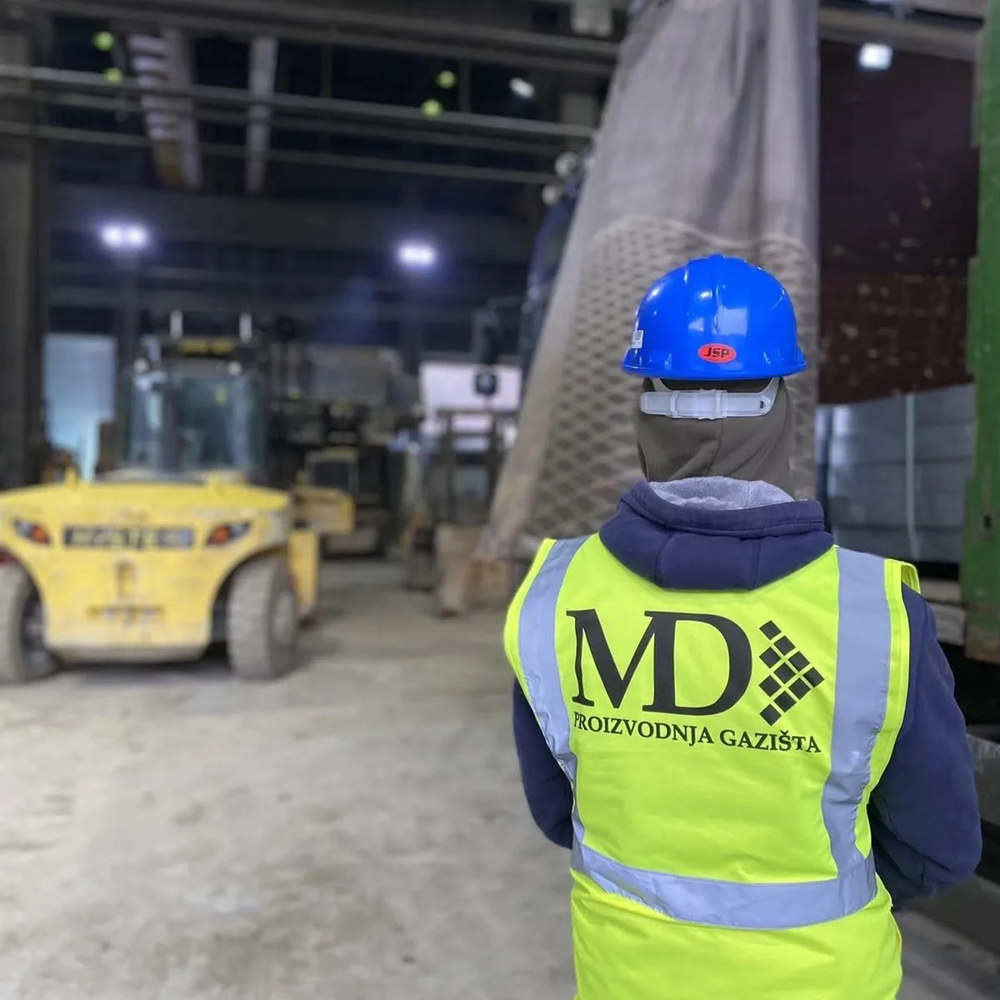

Vezni elementi uz svaku isporuku. Toplo cinkovan vijak M8×60 (DIN 933), četvorougaona matica (DIN 557) i leptirić. Gazište ne morate da varite, pa cink ostaje ceo.
Na stranici „MD Proizvodnja i prodaja gazišta“ objavljujemo fotografije gotovih gazišta i ugradnje. Pratilo nas je 2.200 ljudi, a svi koji su ostavili utisak nas preporučuju.
Na našem spisku kupaca je više od 70 firmi, među njima Srbijaautoput, Xella Srbija, Zorka Opeka, Astra Shipyard, Impol Seval i JP PTT Saobraćaja Srbija.
O nama
Metalna industrija iz Trnovča
Ovim poslom bavimo se još od kraja prošlog veka. Mi smo preduzeće orijentisano na proizvodnju i prodaju sopstvenih proizvoda. Sarađujemo sa firmama u našoj zemlji i sa partnerima u inostranstvu.
Gazišta prekrivaju kanale za odvod vode i kišnice i služe kao podovi platformi i stepeništa. Uz gazišta isporučujemo i vezne elemente.
Naš moto: tačnost, korektnost i poštenje.
„Već dugi niz godina smo u poslu izrade metalnih proizvoda i veoma smo zadovoljni napretkom firme i razvojem tržišta rešetkastih proizvoda.“Dragan Bogosavljević, direktor

Od 1993.Više od 30 godina pravimo gazišta u Trnovču.
Atest na nosivostAtest Mašinskog fakulteta, nosivost po m².
DIN 24537Čelik S235JR po EN 10025, cink po EN ISO 1461.
100% srpsko porekloMaterijal pretežno iz železare Smederevo.
Pitanja
Česta pitanja iz nabavke
Odgovori se oslanjaju na podatke sa našeg sajta. Ono što još nismo potvrdili označeno je kao [PRIMER].
Da li uz gazišta dobijam atest?
Imamo atest Mašinskog fakulteta na nosivost po metru kvadratnom. Ateste za rešetke od 2, 3 i 5 mm možete da preuzmete iznad, kod proizvoda.
Od kog materijala pravite gazišta?
Od čelika S235JR po EN 10025 (Č.0361), pretežno iz železare Smederevo. Radimo i od Č.0146.
Da li su gazišta cinkovana?
Da. Toplo cinkujemo po EN ISO 1461. Cinkovani su i vijci i matice veznih elemenata.
Koje su standardne mere?
Za presovana gazišta za prelaz vozila: 195×995, 245×995 i 295×995 mm. Sve ostale mere radimo po vašem zahtevu.
Kako da navedem mere u upitu?
Prva dimenzija je pravac oslanjanja noseće lamele. Druga je pravac podužne trake ili stabilizatora.
Koja okca radite?
Presovana gazišta: 33×33 i 33×11 mm. SP i protivklizna: 34×38 mm osovinski, svetlo okce 30×30 mm.
Kako se gazište pričvršćuje?
Veznim elementima: vijak M8×60, četvorougaona matica i leptirić. Tako ne varite gazište i ne oštećujete cink.